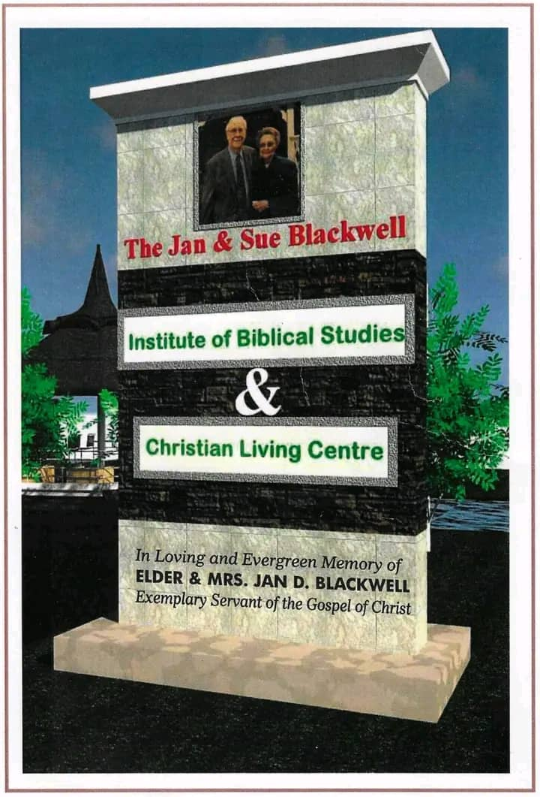

Jan and Sue Blackwell Institute for Biblical Studies
A Biblical studies institute under Right Steps Institute of Management and Technology.
Biblical Studies and Christian Learning
The Jan and Sue Blackwell Institute for Biblical Studies (JSB) is an institute under RSIMT dedicated to Biblical studies and Christian learning.
JSB provides an environment where students can develop their knowledge of Scripture, strengthen their understanding of Christian teachings and grow in their ability to serve others.

Areas of Learning
Biblical Studies
Study and understanding of the Scriptures and their teachings.
Christian Education
Developing knowledge and understanding of Christian principles and values.
Ministry
Learning that prepares students for Christian service and ministry.
Faith and Character
Encouraging spiritual growth, character and responsible service.

Working Together
JSB students and staff can participate in activities and community initiatives alongside Right Steps Christian Schools.
This includes activities such as Charity Friday, where students and staff can come together to encourage service, kindness and community involvement.
Visit RSCS →JSB Under RSIMT
The Jan and Sue Blackwell Institute for Biblical Studies operates as an institute under RSIMT.
Explore RSIMT →Grow in Faith and Skills
JSB provides students with opportunities to combine biblical education with practical and professional development.
NID Programme
Through partnership with Right Steps Institute of Management and Technology, qualified JSB students can pursue a National Innovation Diploma (NID) programme alongside their biblical studies.
Student Benefits
Qualified students may receive tuition support, faith-based academic guidance and opportunities for professional development.
Career Development
Students can receive career mentoring, internship guidance and practical preparation for future employment.
Who Is It For?
The opportunity is designed for Christian youths seeking biblical education together with valuable technical, business and professional skills.